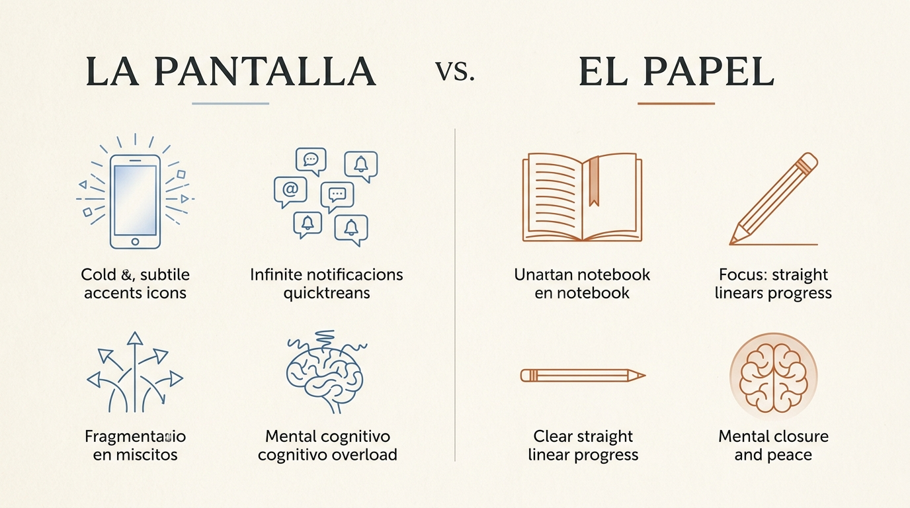

Hay una hora precisa, a mediados de octubre, en la que el mundo parece doblarse sobre sí mismo. El sol cae con una rapidez casi descortés poco antes de las ocho, tiñendo el horizonte de ocres apagados y sombras alargadas. En miles de habitaciones y despachos, sin embargo, el crepúsculo pasa completamente inadvertido. Dentro reina una luz fría, eléctrica y azulada: el resplandor implacable de veinticuatro pestañas abiertas en el navegador, tres bandejas de entrada sin responder y una decena de notificaciones que exigen decisiones microscópicas pero continuas.
Ese momento exacto es el que retrata con desarmante crudeza la primera viñeta de nuestro cómic editorial: la persona encorvada sobre el teclado cuando el reloj digital ya marca las 20:30, presionándose el puente de la nariz con los dedos temblorosos en un intento inútil de aliviar una tensión que ya no es física, sino profundamente mental. Es la sensación universal del «cerebro frito», ese agotamiento en el que las palabras empiezan a desdibujarse y la memoria a corto plazo parece haberse convertido en humo.

Lo paradójico —y doloroso— de este ciclo llega apenas media hora después. Como vemos en la segunda viñeta de la tira, la respuesta aprendida por el cerebro moderno ante la extenuación digital es... consumir más estímulos digitales. Nos tumbamos en el sofá o en la cama prometiéndonos «desconectar cinco minutos», y levantamos el teléfono móvil frente a los ojos en una habitación en penumbra. Lo que sigue es una maraña asfixiante de pensamientos, hilos enredados y dudas recurrentes que orbitan en bucle sobre nuestra cabeza: ¿respondí aquel correo de presupuesto?, ¿debería cambiar de trabajo?, ¿por qué no avanzo en mis proyectos?, ¿qué pasará mañana a primera hora?
Ese nudo de líneas caóticas no es debilidad de carácter. Es pura física cerebral chocando de frente contra un cambio de estación.
1. La neurobiología del otoño y la trampa de la sobreestimulación
En el mes de octubre confluyen dos fenómenos biológicos y culturales que crean la tormenta perfecta para la fatiga mental por pantallas. Por un lado, la reducción drástica de las horas de luz solar altera nuestros ritmos circadianos. La glándula pineal comienza a segregar melatonina más temprano, incitándonos biológicamente a ralentizar la marcha, buscar el recogimiento y disminuir el consumo energético.
Sin embargo, nuestras exigencias laborales y sociales no disminuyen; al contrario, octubre es el mes de la aceleración brutal del último trimestre del año. Para compensar esa pesadez biológica, recurrimos instintivamente a la dopamina barata y rápida que suministran las pantallas: refrescar el feed de redes, consultar métricas, encadenar vídeos cortos o saltar compulsivamente entre pestañas de trabajo.
El precio cognitivo de este mecanismo es demoledor:
- Secuestro de la atención ejecutiva: La corteza prefrontal, responsable de tomar decisiones sensatas y filtrar lo irrelevante, consume glucosa a un ritmo desorbitado con cada salto atencional. Hacia las 20:00, su capacidad de discernimiento está agotada.
- La ilusión del descanso pasivo: Mirar una pantalla luminosa no descansa el cerebro. Lo mantiene en estado de hipervigilancia simpática, interpretando cada píxel encendido como una señal diurna que bloquea el descanso reparador.
- El efecto Zeigarnik desbocado: Cuando dejamos diez tareas a medio terminar dentro de un entorno digital sin límites físicos visibles, el cerebro las mantiene activas en segundo plano, exactamente igual que un ordenador que ralentiza su memoria RAM con cientos de aplicaciones en suspensión.
«El sobrepensamiento no es reflexión profunda: es miedo desorganizado girando en círculos dentro de una mente sin límites de espacio ni tiempo.»
2. La frontera invisible: La tercera viñeta y el acto de decir «basta»
Fíjate detenidamente en la tercera viñeta de la secuencia visual. No hay grandes discursos ni revelaciones místicas: hay simplemente una mano que toma el teléfono inteligente y lo posa con firmeza y calma, boca abajo, sobre la madera de la mesilla. La pantalla se apaga en negro absoluto. La luz azul desaparece.
Ese gesto minúsculo de poner el móvil boca abajo es el punto de inflexión donde se decide la salud mental de tu noche. Representa la instauración de una frontera física. Los dispositivos digitales están diseñados bajo la premisa del infinito: no tienen última página, no tienen bordes, no tienen fondo. Si no eres tú quien decreta el final del consumo, el algoritmo jamás lo hará por ti.
Al dejar el teléfono con el cristal contra la mesa, se produce un silencio sensorial instantáneo. El cerebro, repentinamente liberado del bombardeo de fotones de onda corta, comienza por primera vez en todo el día a regular su frecuencia respiratoria. Pero apagar la pantalla es solo la mitad de la cura. La mente saturada no puede pasar del caos al vacío de golpe: necesita un canal de drenaje.
3. Anatomía de dos mundos: La Pantalla vs. El Papel
Para comprender por qué una libreta consigue lo que ninguna aplicación de notas o meditación ha logrado jamás, basta observar detenidamente nuestro mapa conceptual de contraste. No estamos ante una cuestión de nostalgia romántica por el pasado; estamos ante una diferencia neurocognitiva radical en el modo en que procesamos la realidad.

Cuando observamos la columna izquierda —La Pantalla—, vemos un ecosistema diseñado para la divergencia incontrolable. La luz es emitida directamente hacia la retina (luz transmitida), forzando a los músculos ciliares del ojo a un esfuerzo constante de enfoque. Las alertas son infinitas y fragmentadas; cada enlace es una puerta de salida que desvía el hilo de pensamiento original. El resultado es la sobrecarga cognitiva: el pensamiento se ramifica en hipótesis infinitas, suposiciones ansiosas y la falsa necesidad de resolverlo todo al mismo tiempo.
Por el contrario, la columna derecha —El Papel— ofrece propiedades restauradoras basadas en la física:
- Luz reflejada: El papel no emite fotones propios. La luz ambiental (como la lámpara cálida de nuestra cuarta viñeta) rebota suavemente sobre la textura mate de la celulosa, permitiendo que la pupila se relaje y que el sistema nervioso parasimpático tome el control.
- Contención física y clausura: Una página tiene un margen superior, dos márgenes laterales y un margen inferior. Lo que cabe en la hoja cabe en la vida; lo que no cabe, simplemente no puede abordarse esta noche. Esa limitación física genera un alivio psicológico inmenso: define un perímetro manejable para las dudas.
- Fricción háptica y lentitud obligada: Teclear en un teclado virtual es un acto veloz y desapegado de la motricidad fina. Escribir a mano exige trazar cada letra con el peso del brazo y la fricción de la mina de grafito. Esa lentitud biomecánica desacelera el torrente de ideas a la velocidad de la mano, desarmando la aceleración de la rumia.

4. El ritual de las 21:00: Cómo vaciar la cabeza en cuatro pasos limpios
No necesitas convertirte en un monje asceta ni tirar tu ordenador a la basura. Vivimos en el mundo contemporáneo y dependemos de la tecnología para crear, comunicarnos y ganarnos el pan. La cuestión nunca ha sido eliminar las pantallas, sino impedir que colonicen las horas sagradas en las que tu mente necesita repararse.
Te proponemos un protocolo simple y honesto, basado en la cuarta viñeta de nuestra historia: encender una pequeña lámpara de luz dorada, sentarte con una taza templada y abrir un cuaderno limpio durante quince minutos. He aquí la mecánica exacta del volcado mental:
Paso 1: Delimitar el problema en una sola línea
Cuando sobrepensamos, solemos creer que tenemos «cincuenta problemas urgentes». La realidad es que casi siempre se trata de una única conversación pendiente, una decisión que no queremos afrontar o un miedo a equivocarnos disfrazado de perfección. Escribe en la parte superior de la página: «Lo que realmente me está quitando la paz hoy es...» y oblígate a no superar dos líneas.
Paso 2: Separar hechos comprobables de conjeturas y temores
Dibuja dos columnas sencillas. En la izquierda anota únicamente los datos objetivos: hechos que un testigo neutral podría confirmar. En la derecha, anota todas las suposiciones, catástrofes imaginadas y «¿y si...?». Al contemplarlas enfrentadas sobre el papel, descubrirás con asombro que el 80% de tu tormenta nocturna está compuesto de fantasías que nunca llegarán a ocurrir.
Paso 3: Definir un solo paso micro-reversible
El sobrepensamiento busca la solución definitiva y perfecta. El papel, en cambio, busca simplemente el siguiente paso amable. No intentes resolver el año entero: define la acción mínima de mañana por la mañana (por ejemplo: enviar un único mensaje claro, pedir una cita o descartar una de las dos opciones).
Paso 4: El cierre físico
Llegamos a la quinta y última viñeta de nuestro relato. El lápiz se suelta. El cuaderno se cierra con un chasquido suave. El contenido de tu cabeza ya no flota desordenado en tu memoria de trabajo; ahora descansa físicamente entre dos cubiertas de cartón o tela sobre la mesa. La taza aún conserva algo de calor, el cielo de octubre luce limpio y estrellado a través del cristal de la ventana, y tú puedes, por fin, respirar hondo y dormir con la mente despejada.
Deja de darle mil vueltas
Para cuando pensar más ya no te está ayudando
Si reconoces el bucle nocturno de las pantallas y te cuesta ordenar tus pensamientos en una libreta en blanco, este cuaderno guiado te lleva de la mano. Diseñado en formato cómodo (6x9 pulgadas), con encuadernación sobria y ejercicios guiados para desarmar la duda, separar los hechos del miedo y cerrar decisiones con serenidad.
Esta noche, hazte un favor: apaga la pantalla veinte minutos antes, pon el teléfono boca abajo y dale a tu cabeza el silencio que lleva todo el otoño pidiéndote a gritos.